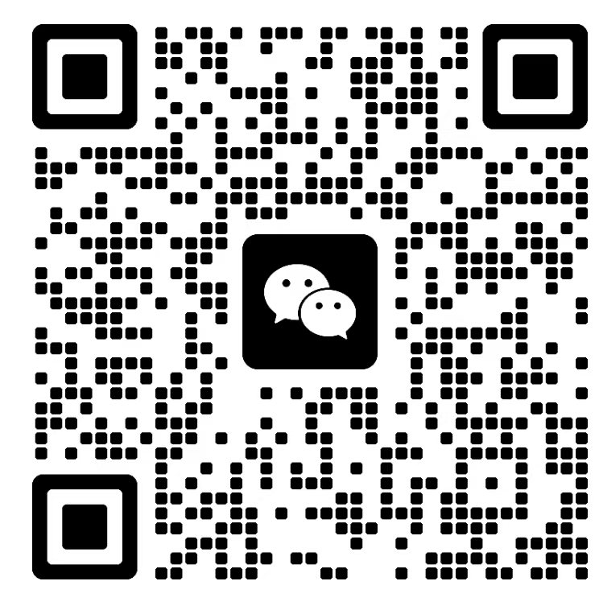

真实项目观察
关注真实副业项目的来源、逻辑、门槛、收益路径和风险边界。
我是强哥，创业十年，长期在推广、分销、裂变和团队项目一线实战。
现在专注和 AI 强哥一起拆解各类真实项目，帮新手小白看清机会、风险和执行路径，少走弯路。
项目能不能做、适合谁做、最大的坑在哪里，先判断清楚，比盲目上车更重要。
这是我接下来重点打造的项目观察社区。不是单纯发项目，而是记录我和 AI 强哥一起拆项目、测项目、看风险、做复盘的过程。
关注真实副业项目的来源、逻辑、门槛、收益路径和风险边界。
用 AI 做资料整理、风险分析、流程梳理、文章沉淀和复盘提效。
AI 可以辅助，但项目值不值得做，最后还是由人的经验和判断来拍板。
我不希望你只因为一句介绍就信任我。你可以先看看我怎么拆一个项目：看项目方怎么赚钱、普通人怎么赚钱、风险在哪里，以及适不适合小额试错。
从项目本质、收费逻辑、用户投入、风险结构和普通人匹配度出发，拆解一个 4980 元跨境电商项目。
打开公众号文章我做过百万级收益项目，也操盘过几十万人团队裂变。长期在推广、分销、裂变、团队管理和培训里摸索，最熟悉的是项目模式、团队放大和风险判断。
这些经历不是为了包装成“永远成功的人”，而是让我更清楚：项目再小，也要先看清上游、渠道、结算、合规和普通人的执行门槛。
不急着上车，不只看收益截图，先把底层逻辑拆清楚。
这个项目到底赚谁的钱，钱从哪里来，能不能持续。
流量来自公域还是私域，能不能复制，平台风险大不大。
能不能团队化、社群化、分销化，是否具备放大空间。
平台、版权、风控、账号、交付、结算，最大的坑在哪里。
资料整理、文案、SOP、FAQ、复盘，哪些环节能被 AI 提效。
你可以加我微信，或者关注公众号「强哥项目拆解」。后面我会持续更新真实项目拆解、AI 共创记录和第二副业 AI 共创实验室的观察。
